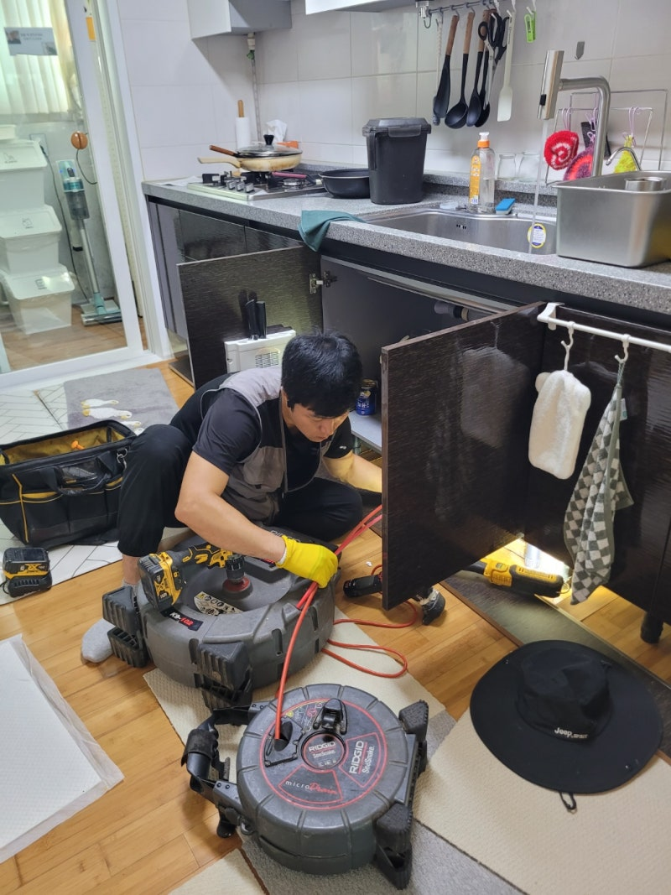
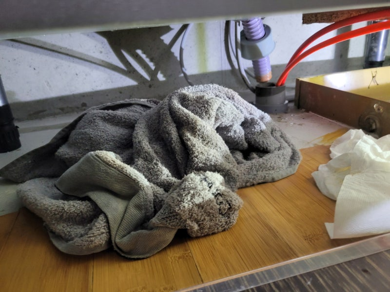
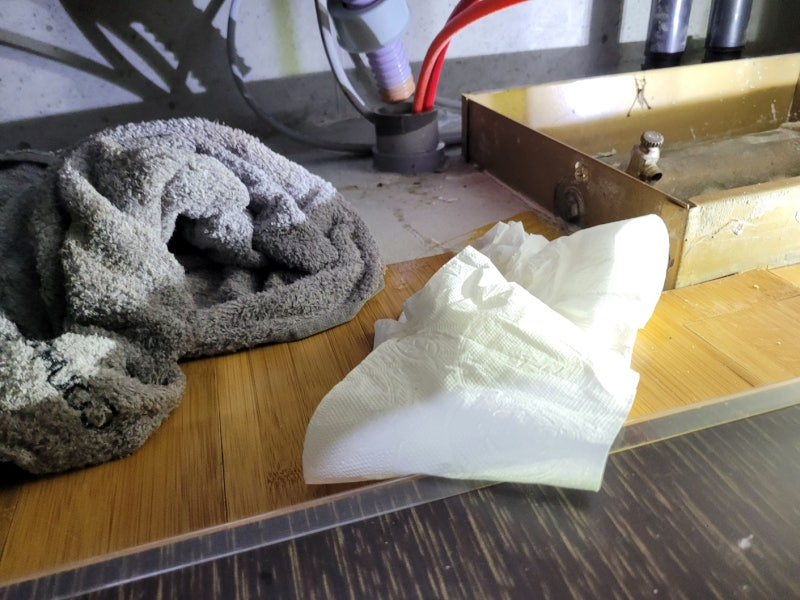
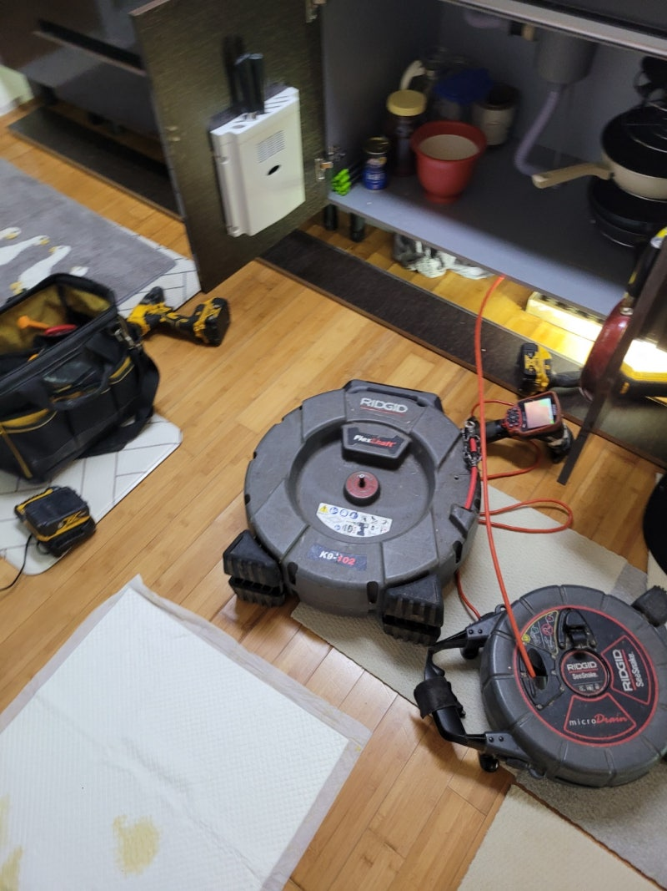
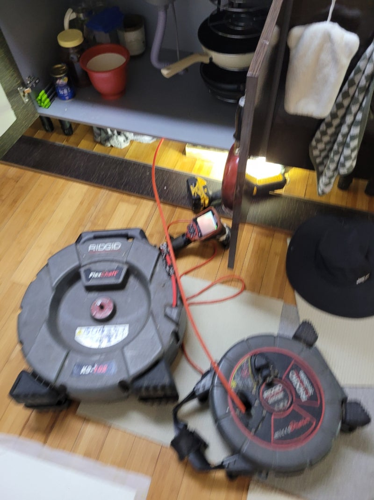
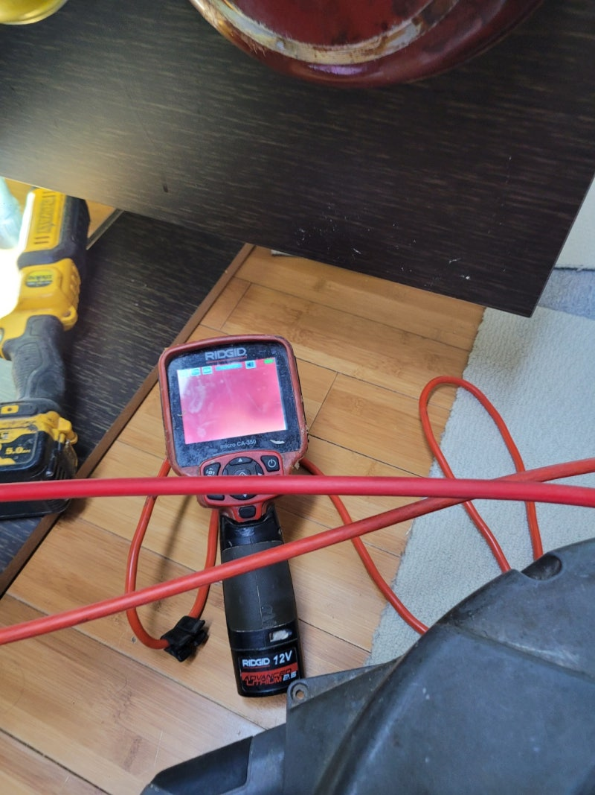
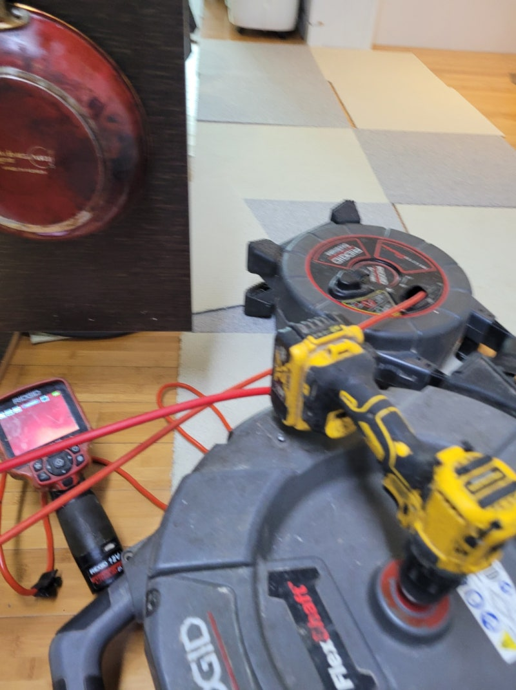
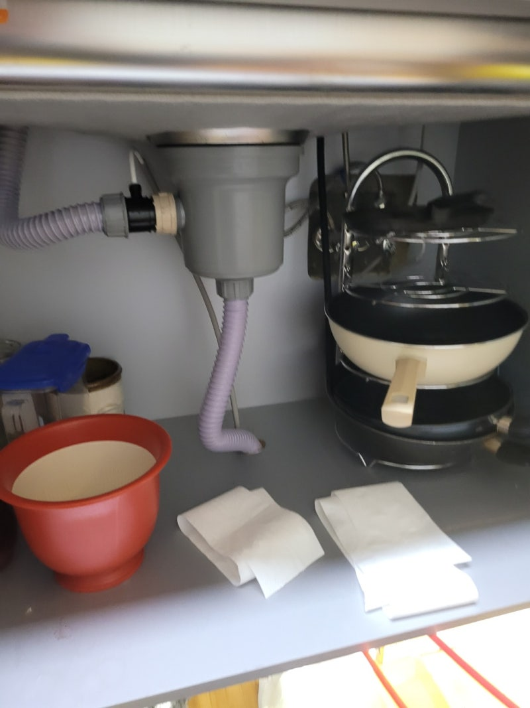

🏠 새솔동 싱크대배수관막힘 해양동 주방배관역류 하수구업체
새솔동 해양동 싱크대배수관막힘 주방배관역류 전문 시공 후기

📋 작업 개요
- 위치: 화성시 새솔동, 안산시 상록구 해양동, 새솔동
- 서비스 유형: 싱크대배수관막힘, 주방배관역류, 하수구업체, 배관 청소, 내시경 점검
- 작업 일시: 2025. 8. 19. 22:32
- 업체명: 하수구수사대 (010-5615-2118)
🔍 문제 상황
안녕하세요.
배관설비업체 " 하수구수사대" 입니다.
새솔동 싱크대배수관막힘 해양동 주방배관역류 하수구업체
가정 내에서 뜻하지 않게 트러블이 발생하게 되면 다들 굉장히 염려하실 텐데요.
특히나 물을 많이 사용하는 주방, 화장실에서 갑작스럽게 막힘 문제가 발생해 물을 아예 사용할 수 없는 상황이라면 서둘러 전문 업체에 도움을 요청하는 것이 좋아요.
주방 싱크대에 물이 고이는 현상이 생기면 밥을 짓고 식재료를 손질하는 등의 일에 차질이 빚어지죠.
또한 식사가 끝난 뒤 설거지 하는 것도 불가능하므로 막힘 현상이 생기면 신속하게 전문 업체를 부르시는 게 좋아요.
지난 주에도 아파트 사시는 고객님 댁에 싱크대 막힘 현상이 나타나서 그 원인을 찾아 해결해 드렸죠.
이 댁은 싱크대를 교체한 지 얼마 되지 않았는데도 싱크대 막힘이 생긴다는 게 의아한 점이었습니다.
고객님이 직접 해결하기 힘든 문제여서 전문 업체인 저희들에게 전화하신 것 같습니다.
현장에 방문한 후 첫 번째로 점검한 장소는 주방 하부장 아래쪽이었습니다.
저희가 봤을 땐 이미 물이 넘쳐 흘러서 흥건히 젖은 것은 물론 그 양도 굉장히 많아보였습니다.

🔎 원인 분석
💡 전문가 진단: 슬러지와 이물질이 통로를 꽉 막고 있어 배수가 불가능하며, 고압 세척과 샤프트 타격이 동반되어야 완벽한 해결이 가능합니다.
이렇게 방치하게 되면 곰팡이가 생길 뿐만 아니라 아랫집에까지 물이 새는 문제가 유발될 수 있으므로 즉시 작업을 진행하기로 했습니다.
첫 번째 작업을 하기 전에 싱크대 아래에 이어져 있는 주름관을 떼어내고 확인해 보니 과연 이물질이 잔뜩 있는 모습이었습니다.
까만색 얼룩이 찌꺼기인데 이런 것들이 주름 사이사이에 달라붙어 굳어 있습니다.
그리고 하수도 제일 윗부분에도 이것들이 다량 붙은 상태여서 완전히 없앨 수 있도록 석션기를 준비했습니다.
석션기는 주름관 내부의 이물질 외에도 하수관 내부에 쌓인 찌꺼기들까지 제거할 수 있는 장비라고 보시면 되고 이같은 막힘 현상을 해결하기에 적절한 장비입니다.
이물질로 인해 입구 쪽이 막혔을 때에도 이 석션기를 이용해 막힘을 해결할 수 있어요.
본격적으로 배관을 뚫으려면 석션기로 배관 내부를 먼저 청소하는데, 문제를 해결할 수 있는 방법을 파악하기 위한 단계로 보시면 됩니다.
석션기를 세게 돌렸는데도 문제가 해결되지 않아서 하수관 속을 좀 더 꼼꼼하게 살펴봐야 했습니다.
저희가 보유하고 있는 하수구 내시경 카메라를 집어넣고 더욱 깊은 곳의 상태를 파악하는 것인데요.
지금 보시는 화면에서는 전부 빨갛게 찍혀있죠.
설비 헤드쪽에 전등이 부착되어 있는데, 그 전등으로 기름때를 비춰보면 이렇게 빨간색으로 보여요.
그러니까, 배관 내부에 기름때가 묻어있으면 모니터로 봤을 때 빨간색으로 나타납니다.

🔧 작업 과정
한 번 더 정확하게 확인해 보니 배관 청소가 엉망인 상황이었습니다.
이번 고객님 댁에서 막힘 문제가 발생하는 이유는 싱크대 배관 안에 계속해서 축적되어 굳어진 기름찌꺼기라고 판단했습니다.
그렇기 때문에 기름찌꺼기를 제거하기에 좋은 장비를 이용해 완벽하게 해결해 드리기로 결정했어요.
제거 작업을 할 때 쓰는 장비, 바로 플렉스 샤프트를 준비했어요.
샤프트 케이블 끝에 붙어있는 헤드가 체인 형태로 만들어져 단단한 이물질도 분쇄하여 쉽게 흡입되도록 만들어 줍니다.
이처럼 잘게 부숴 놓으면 처음에는 제거되지 않던 기름 덩어리도 모두 배관 밖으로 밀어낼 수 있거든요.
다만, 배관의 상태와 이물질의 크기를 확인하면서 장비를 조절해야 작업이 원활하게 진행됩니다.
다시 작업을 시작할 때마다 배관 내시경 카메라를 이용해서 배수구 안쪽을 정확하게 살펴보고, 중간중간 석션작업까지 잊지않고 진행하여 기름때 없는 깔끔한 배관을 만들 수 있게 노력했습니다.
저희는 겉으로 드러난 문제만 해결하고 넘어가지 않습니다.
문제가 나타난 확실한 이유를 찾아내고 완전히 제거해서 싱크대 막힘 문제를 해결하고 배관 안쪽까지 전체적으로 확인하여 이물질들을 모두 제거해 드렸습니다.
통수 테스트를 진행한 결과, 물이 고이는 현상 없이 시원스럽게 흐르는 것으로 보아 작업이 완벽히 끝났다는 것을 알 수 있었답니다.
모든 작업이 끝나고 나면 석션기의 통에 하수관 내부에 축적되어 있었던 기름찌꺼기들이 담깁니다.
잘 보시면 바닥 부분에 각종 찌꺼기들이 내려앉은 것을 확인할 수 있습니다.
이건 배관에 그냥 흘려보내면 안되기 때문에 거름망으로 덩어리들을 모두 걸러준 후 분리해서 버리고 있어요.
보통의 경우 이 단계에서 작업이 끝나죠.
이번에 방문했었던 현장의 주름관은 엄청 오래된 상태였어요.
이 주름관도 새것으로 교환하고 나니 그동안 있었던 싱크대 막힘이 완전히 해결되었어요.
주방 싱크대가 반복적으로 막힐 경우 시중의 배관 세정제만으로는 막힘을 뚫기 힘듭니다.
그 밖에 슬러지가 오랫동안 쌓여있다면 전문 기계를 이용해 안전하고 정확하게 제거해야 합니다.
전문가의 도움을 받아야 깔끔하게 문제를 해결할 수 있어요.


✅ 작업 완료
그렇기 때문에 내시경 장비나 배관 막힘 장비들을 보유한 업체를 이용하셔야 작업이 효율적으로 진행된다는 점을 기억해 주시기 바랍니다.
막힘 문제로 배관을 뚫어야 하는 경우에는 기술력과 전문 장비를 갖춘 저희업체에 의뢰해 주시면 빠르고 신속하게 해결해 드릴 것을 약속드립니다.
하수구수사대 010 4437 9128
#새솔동하수구막힘 #새솔동싱크대막힘 #새솔동싱크대역류 #새솔동배수관막힘 #새솔동배관뚫는곳 #새솔동설비 #새솔동맨홀막힘 #새솔동하수구뚫는업체 #새솔동변기막힘
#해양동하수구막힘 #해양동싱크대막힘 #해양동싱크대역류 #해양동하수구역류 #해양동화장실막힘 #해양동설비 #해양동하수구뚫는곳 #해양동하수구뚫는업체 #해양동변기막힘




⚠️ 주방 싱크대 배관 막힘 예방 수칙
- ✅ 기름기가 묻은 식기나 프라이팬은 설거지 전 키친타올로 반드시 기름때를 닦아내세요.
- ✅ 주기적으로 싱크대 개수대에 뜨거운 물을 가득 받아 한 번에 내려 배관 내부 기름을 씻어내세요.
- ✅ 배수구 거름망을 미세한 필터로 사용하시고 음식물 찌꺼기가 틈으로 새어 들지 않게 관리하세요.
- ✅ 베이킹소다와 식초를 뜨거운 물과 함께 일주일에 한 번씩 부어주면 배관 살균과 막힘 예방에 좋습니다.
💡 핵심 정리
- 확실한 장비 작업(내시경 점검 및 샤프트 스케일링)으로 원인을 뿌리 뽑습니다.
- 작업 후 1년 이내에 동일한 부위 재발 시 100% 무상 A/S 서비스를 보장합니다.
- 서울 · 경기 · 인천 전 지역에 24시간 언제든 긴급 출동할 수 있도록 항시 대기 중입니다.
❓ 자주 묻는 질문 (FAQ)
🚨 새솔동 해양동 싱크대배수관막힘 주방배관역류 문제로 고민이신가요?
정확한 원인 진단과 확실한 시공으로 재발 없는 해결을 약속드립니다.
24시간 긴급 출동 | 서울 · 경기 · 인천 전지역 | 1년 내 재발 시 무상 A/S